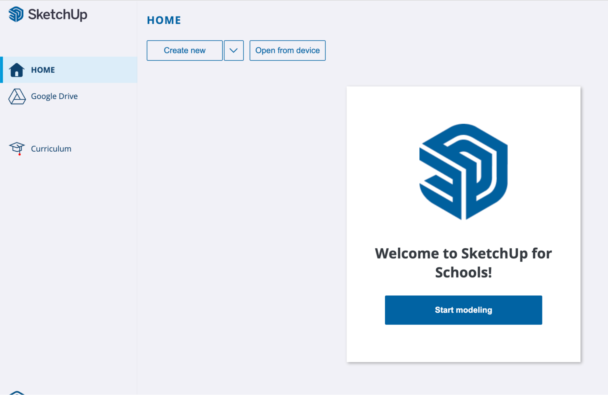

Outline
Overview
Learning Objectives
ISTE Standards for Educators
Intro to SketchUp for Schools
Design Your Dream Home
Part 1: Model a 2D Floor Plan
Chapter 1: Create the Rooms
Chapter 2: Create a Door
Chapter 3: Move and Copy the Door
Chapter 4: Adjust the Doors
Chapter 5: Clean Up the Doors
Chapter 6: Creating the Windows
Chapter 7: Copy the Windows
Chapter 8: Rotate Windows
Chapter 9: Scale a Component
Chapter 10: Space Plan the Kitchen
Chapter 11: Place 2D Furniture
Chapter 12: Label the Rooms
Chapter 13: Change the Style
Chapter 14: Save and Print
Learning Objectives
In this lesson, students will learn how to use the following SketchUp tools:
At the completion of this lesson, students should feel comfortable with the following on their own:
| Using SketchUp for School’s tools to navigate through the modeling window and create basic geometry. |
| Creating 2D shapes with specific dimensions and layout requirements. |
| Using standard architectural symbols and nomenclature to denote doorways, windows, furniture and basic room labels. |
| Creating, moving, scaling and organizing components. |
ISTE Standards for Educators
1 | Learner | Educators continually improve their practice by learning from and with others and exploring proven and promising practices that leverage technology to improve student learning. This lesson fulfills 1a |
2 | Leader | Educators seek out opportunities for leadership to support student empowerment and success and to improve teaching and learning. This lesson fulfills 2b, 2c |
4 | Collaborator | Educators dedicate time to collaborate with both colleagues and students to improve practice, discover and share resources and ideas, and solve problems. This lesson fulfills 4b |
5 | Designer | Educators design authentic, learner-driven activities and environments that recognize and accommodate learner variability. This lesson fulfills 5a, 5b |
6 | Facilitator | Educators facilitate learning with technology to support student achievement of the ISTE Standards for Students. This lesson fulfills 6a, 6b, 6c, 6d |
Intro to SketchUp for Schools
Before we get started, let’s go through some of the basics together.
Getting Access- Go to https://edu.sketchup.com/app
- Sign in with the Google or Microsoft email address provided by your school.
- Note: If you have trouble logging in, check with your administrator that your school or district has installed SketchUp for Schools (Instructions for Google & Microsoft Admins)
|
| TIP |
|
Save often! If you get into the habit of saving your work, you’ll be less likely to lose any progress if class ends and you close your laptop. |
Creating a New File- This is the SketchUp for Schools home screen. Here you can start a new project by clicking “Start Modeling” or “Create New”. Both will open SketchUp’s default template.
|

|
Choosing a Template- Or you can choose a template in your preferred unit of measurement. For this lesson, we’ll be using Architectural - Feet & Inches. Choosing a template will start a new project as well.
| 
|
Saving FilesWhenever you start a new model, it’s a good idea to save your file first. Click on the menu icon on the top left of the screen, then click “Save As.”Create a new folder by clicking on the New Folder Icon and give it a name. Give your model a name and then press “OK.”If you’ve done everything correctly, you’ll see your file name in the top left corner and a “Saved” message.
| 
|
The Scale Figure- Every time you open a new model in SketchUp for Schools, you will see Katherine Johnson’s scale figure. Katherine’s job is to give us a sense of the size of the objects we draw in our model.
- For example, Katherine is 5’5”. If we draw a 3-foot cube next to her, the cube will be about half her height.
|
|
Drawing a Cube- Select the Rectangle tool from the menu on the left.
- Click once on the ground near Katherine’s feet to set one corner of your cube.
- Without clicking again, move your mouse on the screen, type 3’, 3’ and press Enter.
- Select the Push/Pull tool from the menu on the left.
- Click once on the face you just drew. Without clicking again, move up to make a cube 3D.
- Type 3’ and press Enter to complete your cube.
| 
|
TIP |
|
Unless otherwise specified, a click in SketchUp is executed as “click and release.”
|
Navigation Tools- One of the most important things to learn in 3D modeling is how to move around in your model window.
- Click the orbit tool from the menu on the left to expand all the navigation tools.
| 
|

| Orbit
| The Orbit tool allows you to rotate around your model. Click on the Orbit tool, then left click-hold-drag your mouse from side to side in the model window. Mouse shortcut: hold down the scroll wheel to activate the Orbit tool, then move your mouse in any direction to orbit. |
| Pan | The Pan tool allows you to move your model across your screen. Click on the Pan tool, then left click-hold-drag your mouse from side to side in the model window. Mouse shortcut: hold down the scroll wheel, then hold down the shift key at the same time. Move your mouse in any direction to pan. |

| Zoom | The Zoom tool allows you to look closer at the details in your model. Click on the Zoom tool, then left click-hold-drag your mouse up and down in the model window. Mouse shortcut: use the scroll wheel to zoom in and out. |
| Zoom Window | The Zoom Window tool allows you to select an area of your model to view closer. Click on the Zoom Window tool, then left click-hold-drag your mouse to highlight an area of your model. |
| Zoom Extents | The Zoom Extents tool allows you to see all the geometry in your model. Click on the Zoom Extents tool and everything in your model will come into view. |
The Instructor PanelIf you want to see how a tool works, use the Instructor Panel.- You can open the Instructor Panel from the right side menu to find helpful tips on how to use any of SketchUp’s tools.
- The way it works: click on a tool with the Instructor panel open and you will see a description of the tool and a step-by-step guide on how to use it.
| 
|
Search for a toolAll of the drawing tools can be found in the toolset along the left side of the screen. However, you can always use the Search function to find a desired tool more quickly. This search function is also where you will find all of SketchUp’s default keyboard shortcuts, and where you can edit them or add your own.
| 
|
That’s it for the intro.
You’re ready to get started on modeling!
To follow along with the video for this lesson, click here.
Design Your Dream Home
Part 1: Model a 2D Floor Plan
Checklist before you begin this lesson.
| You are logged in at edu.sketchup.com/app |
| You’ve gone through the SketchUp for Schools intro and feel comfortable navigating around in the model window. |
| You’ve created a new project in SketchUp for Schools and have saved it properly. |
Unit of measurement. |
| This lesson is drawn using the Imperial System for measurement. This is common practice in the United States and differs from the Metric System. Whereas the metric system uses meters (m) and millimeters (mm), the Imperial System uses feet (ft) and inches (in). Feet may also be represented by the ( ‘ ) symbol and inches by ( “ ). 1 meter = 3.28084 ft
This lesson template uses inches as the default unit, meaning that all manually typed units will be entered as inches unless otherwise indicated. When manually entering other units, use a ( ‘ ) symbol to indicate feet, or a (m) to indicate meters. |
Chapter 1: Create the Rooms
When starting a floor plan, it is best to begin drawing with basic rectangles. We will start at the origin point within the model and draw the rooms.
Create a rectangle- Click on the Rectangle tool.
- Starting at the Origin point, click to select the corner of the rectangle.
- Release the cursor and move it to the right, do not click or drag.
| 
|
Set the dimensions- Type 16’,30’ and press Enter.
This will create a rectangle that is 16ft along the red axis and 30ft along the green axis. |
|
Pro Tip |
| When drawing rectangles, sometimes the orientation of the dimensions you type gets flipped. For example, you wanted the height (top to bottom) to be longer than the width (left to right). If this happens, don’t undo it. Before clicking anything else, type the values in the other order. In our example, try 30’,16’ instead of 16’,30’ and press enter. |
|
Set the Top View- On the right side of the screen, click on the Scenes panel.
- Click the Top View. This will orient your model so that you are looking at it from above.
- To close the Scenes panel, click on the right arrow in the top right corner of the screen.
|
|
Pan and Zoom- Click on the Pan tool, then click to drag the model over to the left of the screen to make room for the rest of the house.
- Click on the Zoom tool, then click and drag in a downward motion to zoom out until you can see the whole rectangle.
| 
|
Create the foyer- Click on the Rectangle tool.
- Starting at the top right corner of the existing rectangle, click and move the cursor down and to the right.
- Type 48,48 and press enter. This will give you a 4ft x 4ft square entry space.
|
|
Create the bathroom- Create another rectangle starting from the inside corner of the foyer.
- Move down and to the right, then type 12’,6’ and press enter.
|
|
Create guidelines- Click on the Tape Measure tool to activate it. This tool allows you to create guides to reference distances and help create geometry.
- To start, double-click on the bottom horizontal edge of the bathroom you previously drew.
This creates a horizontal guide along the edge that extends beyond the model.
|
|
Create a vertical guide #1- Hover the cursor over the existing vertical line of the bathroom wall.
- Click once to start the guide and move the cursor to the right.
- Type 10’ and press enter. This will place the guide 10’ to the right of the existing edge.
|
|
Create vertical guide #2- Repeat the previous step, this time by clicking once on the first vertical guide that you created.
- Move your cursor to the right and type in 10’ and press enter. This will create a second guideline 10’ away from the first.
|
|
Create the other roomsSee reference image below - With the Rectangle tool, draw from the top right corner of the bathroom (1).
- Click to start the rectangle and move the corner down and to the right.
- Hover until you see it snap to the intersection of the vertical and horizontal guides and then click to finish.
- Repeat the previous steps for the hallway (2) and the room to the right (3).
|
|
Chapter 2: Create a Door
With the rooms drawn, we now need to draw doors in order to enter the spaces. A door can be represented by drawing a line (the door) and an arc (the swing/direction). By making this a component, you’ll be able to copy and use the same door in the other locations.
Starting a door line- Select the Line Tool; click by starting anywhere in the green model area above the building plan. This will prevent the door from being connected to any existing geometry.
- Move the cursor up to draw along the green axis. The line will change colors to reflect the axis you are drawing in.
- Type 36 and press enter. This will draw a 36-inch vertical line.
- The line tool likes to continue drawing from the previous position. Press Escape to deactivate the line tool and prevent it from drawing an additional line.
|
|
Draw the Arc- Click on the Arc Tool (3).
- Starting at the top endpoint of the line (3), click to set the center point.
- Move the cursor down and click at the bottom endpoint to set the first arc point.
- Move the cursor counter-clockwise until you feel it snap at 90 degrees and then click to set the quarter circle.
You should now have a shape that looks like an open door, with the arc indicating the path it follows when being opened or closed. |
|
Make a Component- Components act like identical objects or collections of geometry. Changes made in one component are reflected in each copy of that component.
Components also organize geometry by containing it and keeping it isolated from other geometry. - With the Select tool, click and drag to create a bounding box around the door you just drew in the previous step.
- Right-click on the selected geometry and click Make Component.
Under Definition, give your component a name. In this case, we will use “Door” and then click OK. The component will now show a wireframe around it in blue. This means that the component is currently selected. With the select tool, click anywhere in the green model space to deselect. | 
|
Pro Tip |
|
Groups and Components both isolate geometry. However, components act as identical objects whereas groups are always unique when copied. |
Chapter 3: Move and Copy the Door
Moving objects is an essential skill in SketchUp. When moving an object, be aware of where you select it, as that will become the reference point of your move action. Selecting edges and corners is often best as they are much easier to line up with other geometry. In this step we will move the door component down into the model to represent the entry into the house.
Select the door component- Using the Select tool, click on the edge of the door component to pre-select it.
The door will highlight in blue when selected. |
|
Plan your move- Activate the Move tool [M].
- Click on the top left corner of the bounding box around the door component.
|
|
Place the moving object- Scroll in and out to get closer to the “foyer” square at the top of your model.
- Find the edge and click to set the door on edge.
|
|
Copy the door- With the door still selected, click Ctrl [PC] or Option [Mac] to toggle the move tool to copy mode. A “+” will appear next to the cursor.
At the bottom of the screen is the status bar where you can find which modifier key activates the copy feature on your device. - Click to start the copy, move the cursor down on the green axis and click when the door is on the next horizontal edge.
|
|
Make multiple copies- With the previously copied door highlighted, click Ctrl [PC] or Option [Mac] twice. This turns on stamp mode and allows you to create multiple copies instead of just one.
- Copy the door over to the right for Bedroom #1.
- Copy again to the vertical edge of Bedroom #2.
- Press Escape closing out of stamp mode.
|
|
Chapter 4: Adjust the Doors
The door in Bedroom #2 needs to be rotated to fit the orientation of the room. We will use the built-in rotate feature of the Move tool to rotate to door. We will also flip or mirror the direction of a door to have it open into the space more easily.
Rotate Door- With the Move tool active, hover over the last door that you created and click on one of the red ‘+’ symbols.
This activates a built-in rotate tool within the Move tool. - Move the cursor counter-clockwise 90 degrees until it snaps into place along the wall, and then click to set the desired rotation.
|
|
Move the door- With the Move tool, move the door that you just rotated upward until it is aligned with the hallway at the top of the floorplan.
|
|
|
|
Zoom out- Zoom out to view the entire model.
- Notice that 2 of the doors do not swing out in the ideal direction.
For Bedroom #2, imagine you want to open the door just halfway. In its current configuration, it would be closed off to the majority of the room and make for a challenging transition every time someone wants to get into the room. The door should be flipped or mirrored. |
|
Flip the door- With the Select tool, right-click on the door component in Bedroom #2.
- In the context menu, choose Flip Along and then click Component’s Red.
- Then click off the object to see the desired flip or mirroring of the door.
- Repeat this process for the second door, testing out different axes if needed.
|
|
Chapter 5: Clean Up the Doors
When drawing floor plans, doors are represented without a line where the wall and the door meet. This is to suggest how the door opens into a space. In order to represent this, we need to create line breaks in the walls where the doors are positioned and then delete them.
Open into the living space- With the Select tool, click on the vertical edge representing the wall between the living room and the foyer..
- Press the delete key to remove the edge.
- Repeat this with the edge to the right so that the foyer is now a horizontal hallway.
|
|
Remove door edges- With the Line tool, draw a line across the open edge of each of the doors, as shown in the image to the right.
- With the Eraser tool, click each of the edges that you drew to remove them.
- Click on the Zoom Extents tool to review the model and see the floor plan taking shape.
|
|
Faces and Edges- Notice that the faces of the model have also been removed.
Don’t be alarmed. In this 2D model, it's ok not to have any faces. In the next lesson, you will learn how to extrude this into 3D. For now, just focus on the 2D! |
|
Pro Tip |
|
Finalize the placement of all the doors before creating the lines and erasing the edges if possible. At this stage, if you need to adjust the door placement, you will have to move the door component first and then draw new lines to fill in the walls that were erased. Sometimes it's easier to delete the entire wall edge and draw the openings back in versus manually moving the openings. |
Chapter 6: Creating the Windows
Windows in a floor plan are represented as rectangles with lines running through them. Let us find out how to create window components, then move and copy them throughout the various rooms in the house.
Create a window symbol- Start in an empty area within the model space.
- With the Rectangle tool, click to start and move the cursor down and to the right then type 36,6 and press enter.
|
|
Draw the glassWindows are usually represented by a rectangle with a line going through them. - With the Line tool selected, hover over the left vertical midpoint edge. Click to start the line.
- Move the cursor to the right and click to finish the line at the right vertical midpoint line.
TIP: the midpoint snapping point is always a cyan-colored dot. |
|
Make a window component- With the Select tool, click and drag a bounding box around the window.
- Move the cursor over the window and right-click, then select Make Component.
- Name the component “Window” and then press OK.
| 
|
Centering and moving the windows- With the Move tool, hover over the window until it highlights.
- Position the cursor so that it is at the midpoint of the window.
- Click to begin the move.
- Move the cursor up and over to the desired location. Every room should have a window in it. Start by moving the window to the nearest room.
The edge of the wall will snap to the cyan (midpoint) dot. - Once positioned, click to finalize the move and set the object in place.
|
|
Chapter 7: Copy the Windows
When copying the windows, focus on placing them so that the middle/center of the window is on the wall edge. This will make it easier to rotate any of the windows that need to be adjusted.
Location of windows- To the right are suggestions of where windows can be placed in the model.
|
|
Stamping the Window- With the Move tool still active, click Ctrl [PC] or Option [Mac] twice to toggle on the stamp tool.
- Click at the center of the window to start the stamping process.
- Move the cursor over to the next room location to the right.
|
|
Keep stamping- Click again to continue stamping to the desired locations for windows.
This includes one stamp for any horizontal wall location. |
|
Stamping vertical windows- Stamp a window on the vertical walls as shown to the right.
At this stage do not worry about rotating the windows. We will take care of that in next step. |
|
Windows from an edge- With the Tape Measure tool, in the main living area, click on the left vertical edge to begin drawing a guide.
- Move the cursor to the right and type 24 and then press enter.
|
|
Right vertical guide- Repeat the previous step to create a guide 24-inches away from the right edge.
|
Copy the windows- Using the guides as references, activate the Move/Copy tool to place two windows along the bottom edge of the room, each 24” away from the outer walls.
|
|
Chapter 8: Rotate Windows
All of the vertical walls now have windows running horizontally. Use the built-in rotate feature of the move tool to rotate the windows.
Rotate a window- With the Move tool, hover over one of the windows along a vertical wall.
When the cursor is over the desired component, notice the red ‘+’ (anchor points). - Move the cursor until it is over one
of the ‘+’ symbols.
|
|
|
Rotate- Click to activate the built-in rotate tool. Move your cursor up or down until the window snaps along the wall edge.
The cursor will snap to 15-degree increments as you rotate and will always rotate around the center of the object. - If necessary, move the window along the wall until it is in the desired position.
|
|
Repeat- Repeat the previous two steps with the remaining windows in your model.
|
|
Chapter 9: Scale a Component
Typically, windows in a house won’t all be the same size. They vary based on size and the room type. Using the Scale tool, we can stretch a window component to represent a wider opening. Let us turn a small window into a larger sliding door.
Activate the Scale Tool- With the Select tool, click on the window in the living room.
- Activate the Scale tool.
|
|
Scale from the center- If needed, zoom in closer to see the scale grips on the window.
- Hover over the top middle grip. You will see a tool tip that indicates you’re using the “Red Scale”. This represents the axis that the component is being scaled along.
Red = X, Green=Y, and Blue=Z. - Click Ctrl [PC] or Option [Mac] to toggle on scaling from the center of the window.
Click on the top middle grip, move the cursor up to extend the window, and click to set it.
Scale to a set dimension- The previous step scaled the window by eye. You can also manually enter your desired window height.
- Type 8’ and press enter.
|
|
Verify the length- With the Tape Measure tool, click on one corner of the object. Move the cursor along it and then click to the end to set the distance.
- Reference the measurement box in the bottom right corner of the screen to verify the value in Measurements is 8’.
|
|
Chapter 10: Space Plan the Kitchen
When planning out the position of cabinets and appliances in a kitchen, guides are helpful temporary markers to show the intended location for new geometry.
Guides for the countertop- With the Tape Measure tool, click on the horizontal edge along the top of the model.
- Move the cursor down, type 24 and press enter.
Guides for the island- With the Tape Measure tool, click on the guide you drew in the previous step.
- Move the cursor down, type 42 and press enter. This draws a guideline for a 42” walkway between the cabinets and the island.
- Draw a third guideline 48” down from the second.
| 
|
Vertical guides for the island- In order to give some walking room, draw a guide 48” from the left and right vertical walls of the kitchen area.
|
|
Draw the countertop and Island- With the Rectangle tool and using the guides and edges as a reference, trace the area for the countertop and island as shown in the video to the right.
|
|
Erase the guides - Click on the Search tool.
- Type the word “delete”.
Notice the results for Delete Guides. - Click Delete Guides to remove all the dashed guidelines in your model.
|
|
Chapter 11: Place 2D Furniture
Let us explore how to fill up the rooms with furniture. Like the 2D doors and windows we created, furniture symbols can be used to explore different room configurations. Rather than creating these from scratch, you will learn how to search the 3D Warehouse for 2D furniture components.
Finding 2D Components- Click on the Components icon to open the Components tray on the right side of the screen.
- Search the 3D Warehouse by typing 2d furniture and press enter.
Notice how you can browse available components other users have created. You can also browse components currently in the model. |
|
View the 2D furniture component- Click on the Home icon in the Components tray.
- Notice the components currently in the model. This includes the Door and Window we’ve already created, as well as our scale figure, Katherine Johnson.
- Notice an extra 2D furniture component*.
*Note: This was included specifically in this training file. It will not be here if you start a new document. If you need to download it from the 3D Warehouse, search for 2D Furniture - SketchUp for Schools. |
|
Place the 2D furniture component- Click on the 2d furniture component.
- Move the cursor into the model and place the component just above the model by clicking
- Zoom in or out to make it easier to see.
|
|
Explode the component- The 2d furniture component comes in as one single piece of geometry. In order to position and place each individual piece of furniture, the component needs to be exploded.
- With the Select tool, click or make sure the existing component is highlighted in blue.
- Right-click the component and select Explode.
- Notice the sub-components now show up individually in the panel to the right.
|
|
Placing the furniture- Fill in the space by clicking on the desired component and moving it into the model space.
- As you place objects, use the Move tool to refine their position and try them out in different rooms.
| 
|
Rotating components- Like with the window component we previously created, use the built-in rotate function of the Move tool to adjust the rotation of objects that need to be turned.
|
|
View the model- With the Select tool, drag a window around the placeholder components above the model.
- Press the Delete key to remove them from the model.
- With the Zoom Extents tool, take a look at the model to preview the floor plan.
|
|
Chapter 12: Label the Rooms
To identify the rooms, we need to add labels using the 3D Text tool. This allows us to add titles to the rooms and spacing being designed.
Label the kitchen- Click on the 3D Text tool located within the drawing tools on the left.
Create 3D Text- Type KITCHEN into the text field.
- Uncheck Text extrusion since the text only needs to be in 2D and not extruded as a dimensional 3D letter.
- Press OK.
Position the 3D Text- Move your cursor and notice that the text is now attached to it. Click to place your label in its desired position.
| 
|
Repeat for the other spaces- Repeat the process for the Living Room, Bath, and 2 Bedrooms.
- Be creative and choose to name them however you want as a label. For example, Dan’s Bedroom, Home Office, Game Room, etc.
|
|
Change Text Color- Notice the text fill is white with a stroke or edge around it.
- Click on the Paint Bucket tool. The Materials tray will open on the right side of the screen.
- Select the desired color for the text and click on the swatch. If you don’t see the one you want, try clicking on the search icon.
- Place the cursor over the label and click to add the material to the object.
- Repeat this process for the other labels.
| 
|
Chapter 13: Change the Style
Floor plans are not usually on green backgrounds. Changing the default style in SketchUp will allow us to view the model as a black and white drawing that is then ready to print.
Default Style- The default template file used in this lesson is Landscape Architecture Style.
This gives the model space a green background which is not ideal for creating 2D floor plan exports. Change the style- Click on the Styles icon on the right side of the screen.
- Click search and then on Default Styles
- Select Shaded with textures
Notice the model space is now black with a white background. | 
|
Prep for export- Delete the scale figure (Katherine Johnson) so that she doesn’t export with the model.
- Using the Select tool, click on her and then press the Delete key.
|
|
Set the view- From the Scenes panel on the right, find and select Top View.
- Click Zoom Extents to view the entire model in a flat 2D view.
- Close all of the right side toolbars by clicking the right arrow on the top right of the screen.
| 
|
Hide the Axes- By default, the drawing axes are visible. They will actually show up in our print view if we do not turn them off.
- In the Search tool, type “axes.”
- View Axes will appear with a slider to toggle them on and off. Click the slider to turn the axes off in the model. Notice the Red, Green, and Blue lines are now hidden.
| 
|
Chapter 14: Save and Print
In order to finish the lesson, we need to save our work and export or print it. Printing as a PDF is a common way to share an image or document for others to view digitally. This can also be used to print out later.
Save the modelWe first need to save the model to keep our progress. - Click on the menu icon in the top left corner of the screen to open up the save and export options.
- Click Save as.
- Choose a location to save the file on your drive, give the file a name, and click Save here.
|
|
Print- In the same top left corner menu, click Print.
A Print Preview will appear. |
|
Adjust the view preview- The preview of the model may not show the entire floor plan.
To adjust the view, hover over the model space and scroll up or down for the desired view. You can also click to drag it across the screen. | 
|
Print to PDF- Select the desired paper size.
- If you forgot to change the style and your model is still displayed with a green background, click White background to override the display style.
- Click Print to PDF.
- On the Please Confirm screen, click OK.
- Save the PDF to your desired folder or destination on your computer and click Save.
|
|
Congratulations! |
|
Thanks for following along with this SketchUp for Schools floor plan lesson. You can now play around with creating your own floor plans using the skills learned in this lesson. |
|
Keep Going… |
|
This lesson is Part 1 in a 3 Part series: Design Your Dream Home. Move on to Part 2: Turning 2D Into 3D. In Part 2 let’s turn your 2D floor plan into a 3D home, complete with furniture and decor. |